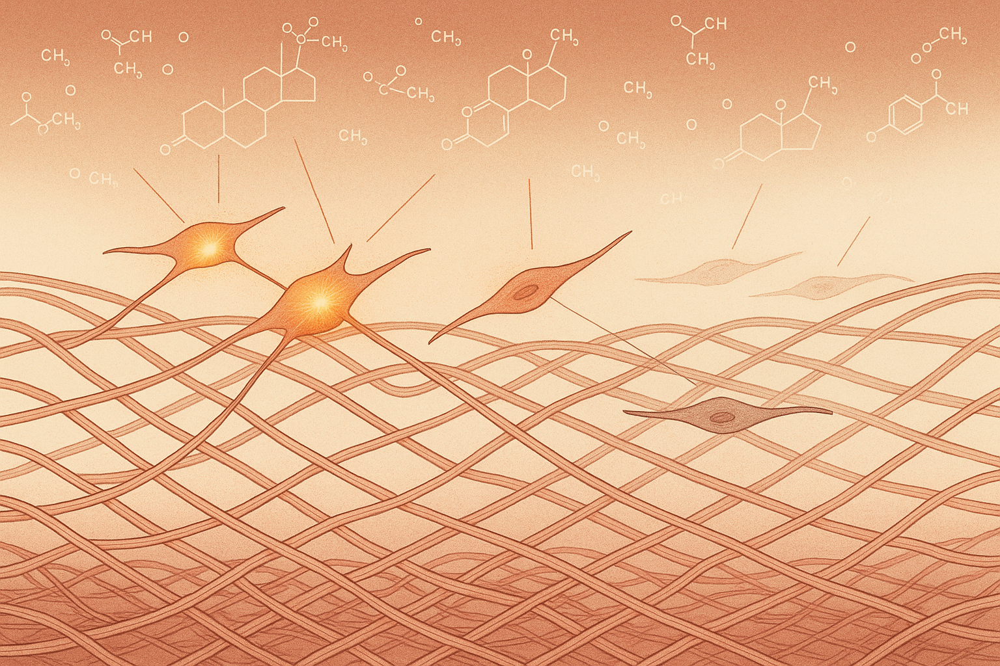
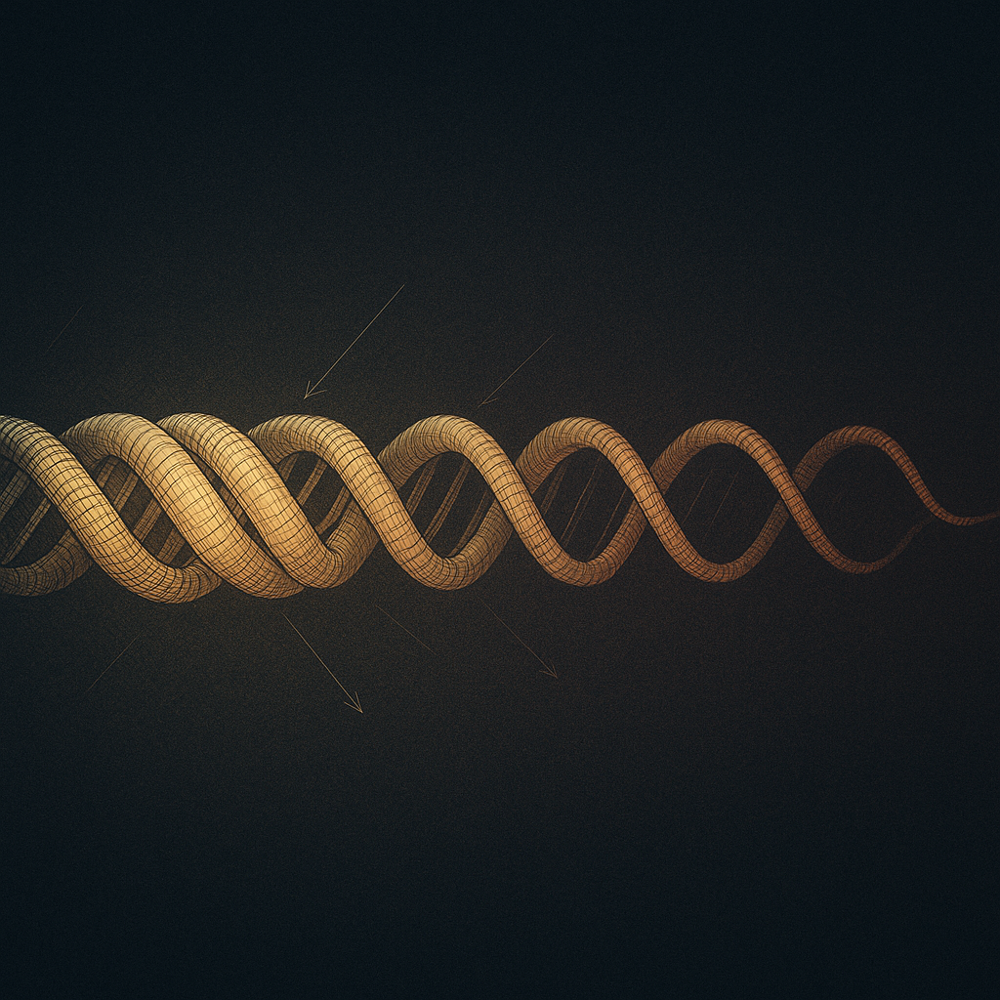
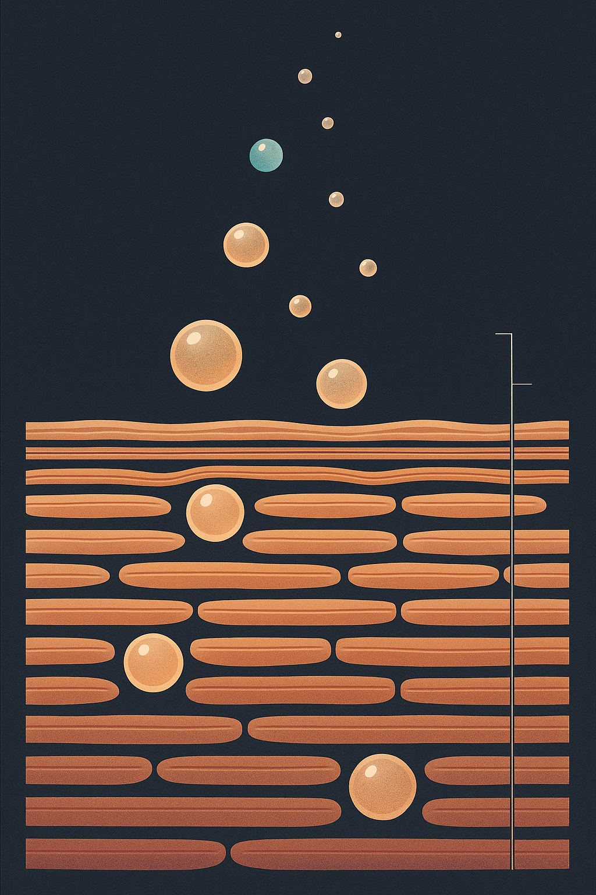

Review below. Reply approve to publish the Facebook post, or tell me edits.

You know the moment. A serum you have used for years, one that always left your skin looking plump and calm by morning, suddenly feels like it is doing less. The moisturiser sits on top instead of sinking in. Your face is drier by mid-afternoon, a little more reactive to things it never minded before, and quicker to look tired.
The easy story is that the product got worse, or that you need to spend more. Usually neither is true. Somewhere around perimenopause, your skin itself changed. Once you understand what actually shifted, the fix stops being about chasing the next bottle and starts being about working with your skin as it is now.
The short version: oestrogen falls, and skin is an oestrogen-responsive organ.
Oestrogen supports fibroblasts, the cells deep in your dermis that keep collagen and elastin turning over. Think of fibroblasts as a small maintenance crew, constantly repairing the scaffolding that holds skin firm and springy. Oestrogen is part of what keeps that crew busy. As levels drop through perimenopause and after, the crew slows down. Turnover falls behind.
This is not a vague feeling. Research consistently finds that a meaningful share of skin collagen is lost in the first years after menopause, with the steepest decline early on before it settles to a slower, steadier loss. Less collagen and elastin means skin that feels thinner and less bouncy, and fine lines that read a little deeper.
At the same time, the skin barrier, the outer layer that locks water in, holds less moisture than it used to. Oil production eases off. So skin gets drier, and dryness makes everything look and feel worse: more crepey, more reactive, more inclined to sting at products it once tolerated happily.
Because most of the products you own were chosen for the skin you had, not the skin you have.
A gel moisturiser that felt perfect for slightly oily skin at 35 can feel like nothing on drier, thinner skin at 50. An exfoliating acid you used twice a week without a thought may now leave you pink and tight, because a weaker barrier has less tolerance to spare. The product did not fail. The brief changed, and no one told the product.
This is genuinely good news, because it means the answer is rarely more. It is different, and usually simpler.
Here is the honest, unglamorous version. It will not sell you ten new steps. It works because it respects what your skin is actually doing.
Barrier first. Choose a richer moisturiser with ingredients that support the barrier, such as ceramides, glycerin or squalane. If your skin feels tight ten minutes after cleansing, that is a barrier asking for help, not a wrinkle to attack.
Sun protection, daily, non-negotiable. Sun exposure is the single largest driver of visible skin ageing, and it does not pause for menopause. A broad-spectrum SPF every morning does more for how your skin looks in five years than almost anything else you can buy.
Consistency over novelty. Skin responds to what you do most days for months, not to the exciting thing you did for a fortnight before moving on. A boring routine done faithfully beats a brilliant routine done sporadically.
Fewer products, chosen on purpose. A gentle cleanser, a barrier-supporting moisturiser, a daily SPF, and one active you actually tolerate. That is a complete routine. More than that is often just more chances to irritate skin that is already more reactive.
Inside a barrier-first, keep-it-simple approach, gentle daily photobiomodulation is one low-effort supportive habit worth understanding.
The plain-English version: certain visible wavelengths, including 630nm red, are studied for their ability to gently support the same fibroblast activity that keeps collagen and elastin turning over. It is a maintenance idea, a nudge to the crew, framed around skin longevity rather than a war on wrinkles. A device like ours delivers this to the face and neck together in about ten minutes a day.
Now the limits, plainly, because you deserve them.
Red light will not restore your oestrogen. It is not HRT, and it does not act like it. It is not a filler, not a laser, not a medical treatment. It is a cosmetic device. Results are gradual and modest: many people notice glow and a more even tone within 7 to 10 days, while any softening in the look of fine lines is a 4 to 8 week story, and only with consistency. It supports what your skin is doing. It does not override biology.
And some people simply do not need it. If your skin feels comfortable, your barrier is happy, and your routine is working, you do not need to add anything. If your main concern is a medical skin condition, that is a conversation for your GP or dermatologist, not a light mask. A gentle daily glow habit is for the person who wants a small, consistent bit of maintenance, not a rescue.
Redermis is a new Australian brand making one thing: a gentle, daily face-and-neck light therapy mask. We are new, we are still earning our reviews, and we would rather explain the mechanism and its limits honestly than promise you a miracle. Your skin changing is not a problem to panic about. It is just information, and it is easier to work with once someone explains it plainly.
If you want a closer look at the mask and its full spec, it is here.

It is not you, and it is not the products.
Here is what actually shifts in the hormonal transition, in plain terms.
First, as oestrogen falls, collagen turnover slows, so skin that used to bounce back takes its time. Second, the barrier holds onto less water, which is why things can feel drier, thinner and more easily reactive than they did a few years ago. Third, none of it happens overnight. It is gradual, not a switch someone flipped.
So the honest answer is not more products or a stronger routine. It is usually gentler and more consistent: protect the barrier, do less, do it regularly.
Gentle daily light can sit quietly inside that as one small supportive habit (10 minutes, face and neck together). It is not a hormone fix, and it is a cosmetic device, not medical. Just consistency, on your terms.
At Redermis we are about skin longevity, not a war on wrinkles. If this rings true, you are far from alone.
If you ever want a closer look at what we make, it is here:
https://redermis.com.au/products/medical-grade-silicone-7-wevelenghts-photon-led-mask-face-and-neck-red-light-therapy-flexible-facial-mask-repair-skin-wireless-use
## Hashtags
#SkinLongevity #Perimenopause #SkinOver40 #GentleSkincare #Redermis

It was never your skincare. It was your skin changing.
Three quiet shifts happen in the hormonal transition:
Collagen slows as oestrogen falls.
The barrier holds less water, so skin feels drier and turns more reactive.
And it is gradual, not overnight, which is why it can feel like nothing "works" the way it used to.
Here is the reframe most of us never get told: the fix is gentler and more consistent, not more products. Piling on stronger actives on skin that has become more reactive tends to backfire. Calm and steady is the longevity play.
Where a gentle daily light habit honestly fits: it is one small supportive step, done consistently. Not a hormone fix. Not a filler. Cosmetic, not medical, and no promise of a filtered result.
Ten minutes. Face and neck. Together.
Redermis: seven wavelengths, 309 emission points, ten minutes a day. A calm daily ritual, not a miracle.
Full spec and a closer look, link in bio.
## Hashtags
#skinlongevity #perimenopauseskin #menopauseskin #skinbarrier #barrierhealth #skinover40 #hormonalskin #athomeskincare #skincareover40 #ausbeauty #skinhealth #gentleskincare #skincaretips #collagensupport
## Title
Perimenopause and Skin: What Really Changes After 40 (and Where a Gentle Daily Habit Fits)
## Description
As oestrogen shifts in perimenopause, skin makes less collagen, holds less water, and can feel drier and thinner. That is biology, not neglect. Realistic support looks like gentle consistency: barrier care, sleep, sun protection, and a calm daily ritual. Red light therapy at home is one small piece of that maintenance, an LED face mask worn ten minutes a day to support skin over weeks, not overnight. Think skin longevity, not a war on wrinkles.
If you ever want a closer look at the science and the mask, it is here: https://redermis.com.au/products/medical-grade-silicone-7-wevelenghts-photon-led-mask-face-and-neck-red-light-therapy-flexible-facial-mask-repair-skin-wireless-use
## Hashtags
#perimenopauseskincare #skinlongevity #redlighttherapy #ledfacemask #skincareafter40
## Image
Reuses the Instagram image (instagram.png).